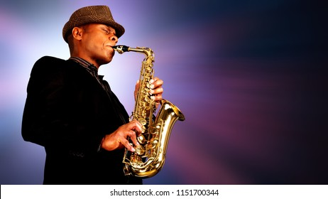

Saxopohone


The saxophone is a type of single-reed woodwind instrument with a conical body, usually made of brass. As with all single-reed instruments, sound is produced when a reed on a mouthpiece vibrates to produce a sound wave inside the instrument's body. The pitch is controlled by opening and closing holes in the body to change the effective length of the tube. The holes are closed by leather pads attached to keys operated by the player. Saxophones are made in various sizes and are almost always treated as transposing instruments. Saxophone players are called saxophonists.
The saxophone is used in a wide range of musical styles including classical music (such as concert bands, chamber music, solo repertoire, and occasionally orchestras), military bands, marching bands, jazz (such as big bands and jazz combos), and contemporary music. The saxophone is also used as a solo and melody instrument or as a member of a horn section in some styles of rock and roll and popular music.